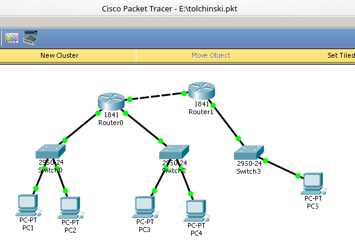
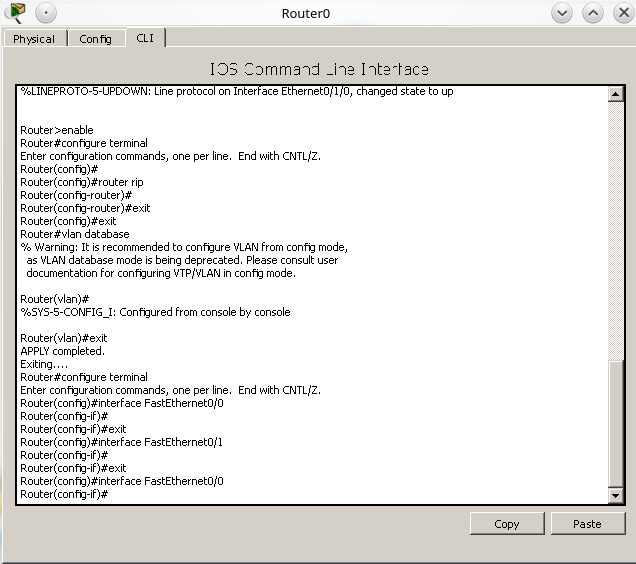

Студент группы
ИДМ-17-04
Лабораторная работа №1
Экосистема разработки программ с открытым кодом
Создана личная страница студента с использованием html/css. Произведена работа с git и github.
Папка с исходными кодами в репозитории.
Лабораторная работа №2
Разработка простого веб-приложения
Задачи:
-
Создать приложение.
-
Прописать стили страницы :
CSS
-
Прописать js функционал :
JS
-
Результат:
Игра "Змейка"
Лабораторная работа №3
Настройка локальной сети передачи данных
В симуляторе Cisco Packet Tracer на рабочем столе было размещено 5 компьютеров, 3 коммутатора и 2 маршрутизатора.

Всё оборудование было соеденино и настроено с помощью Cisco IOS для успешной передачи информации между компьютерами.

Подготовка к экзамену
Формулировка вопроса по теме "Интернет-технологии"
Выберите ОДИН правильный ответ:
HTML - это
- А) язык редактирования
- Б) язык программирования
- В) язык разметки гипертекста
- Г) язык структурной разметки
Правильный ответ: В
Страница прошлого года
Статья прошлого года